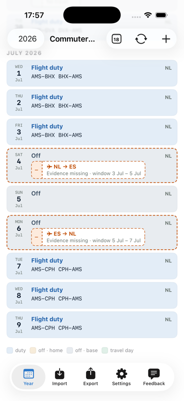
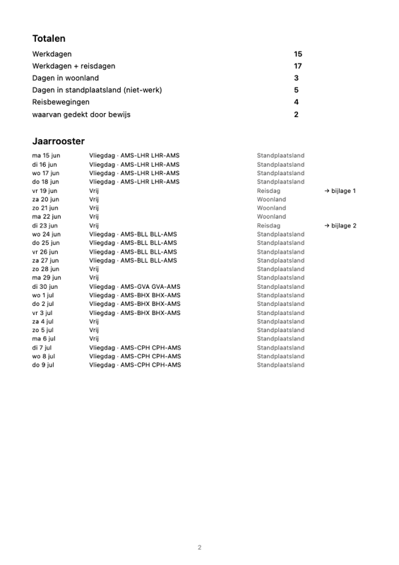

Commuter Log leest je rooster, weet welke reizen erbij horen en koppelt je boarding passes als bewijs. Eén knop maakt het jaarrapport voor de belastingdienst.
Commuter Log reads your roster, knows which trips belong to it and attaches your boarding passes as evidence. One tap builds the annual report for the tax authority.

Gemaakt voor de praktijk van pendelend vliegend personeel: weinig invoeren, alles controleerbaar, en een dossier dat klopt als het erop aankomt.
Built for the reality of commuting flight crew: minimal input, everything verifiable, and records that hold up when it matters.
Leest je roosteragenda en historische rooster-PDF's — elke werkdag, layover en vrije dag op zijn plek, met terugwerkende kracht.
Reads your roster calendar and historical roster PDFs — every duty day, layover and day off in place, retroactively.
De app weet welke reizen er in je vrije blokken horen, toont waar bewijs ontbreekt en koppelt gescande boarding passes als genummerd bewijsstuk.
The app knows which trips belong in your free blocks, shows where evidence is missing and attaches scanned boarding passes as numbered exhibits.
Dagregister, totalen, bijlagen en maandoverzichten in één PDF — in de taal van jouw belastingdienst, klaar voor je adviseur.
Day register, totals, exhibits and monthly overviews in one PDF — in your tax authority's language, ready for your adviser.
Alles staat op je eigen toestel en in je eigen iCloud. Geen account, geen server, geen tracking.
Everything lives on your own device and in your own iCloud. No account, no server, no tracking.
Koppel je roosteragenda en importeer oude rooster-PDF's. De app zet elke dag op zijn plek en bewaart de overzichten meteen als bewijs.
Link your roster calendar and import old roster PDFs. The app files every day and stores the overviews as evidence.
Bij elke verwachte reis hoort een bewijsstuk. Boarding pass voor de camera, bevestigen, klaar — ook met terugwerkende kracht uit je fotobibliotheek.
Every expected trip needs its evidence. Hold the boarding pass up to the camera, confirm, done — retroactively from your photo library too.
Eén knop maakt het jaarrapport: totalen, dagregister met verblijfsland, genummerde bijlagen en alle maandoverzichten chronologisch.
One tap builds the annual report: totals, a day register with country of stay, numbered exhibits and all monthly overviews in order.
Geen losse bonnetjes en screenshots meer, maar één document met een verhaal dat klopt:
No more loose slips and screenshots — one document that tells a consistent story:

De app is er voor iPhone en iPad en zit momenteel in een besloten testfase via TestFlight. Scan de code met je camera, of mail ons voor een uitnodiging — testen is gratis.
The app is available for iPhone and iPad and is currently in a closed test phase through TestFlight. Scan the code with your camera, or e-mail us for an invite — testing is free.
Voor vliegend personeel dat in een ander land woont dan waar de standplaats is en voor de belasting moet aantonen welke dagen waar zijn doorgebracht. Woonland, standplaats en thuisluchthavens zijn vrij instelbaar — de app werkt voor elke combinatie van landen.
For flight crew living in a different country than their base who need to prove to a tax authority which days were spent where. Home country, base and home airports are fully configurable — the app works for any combination of countries.
De app leest roosteragenda's (een agenda-abonnement van je roostertool, of een rooster dat in je Google-agenda staat) en verschillende gangbare rooster-PDF-formaten. Wordt jouw formaat nog niet herkend? Stuur het via het Feedback-tabblad in de app mee als bijlage — dan wordt het toegevoegd.
The app reads roster calendars (a calendar subscription from your roster tool, or a roster living in your Google calendar) and several common roster PDF formats. Format not recognised yet? Attach it through the app's Feedback tab and it will be added.
Op je eigen iPhone/iPad en in je eigen iCloud. Er is geen account en geen server van de app; niemand anders kan bij je dossier. Zie de privacyverklaring.
On your own iPhone/iPad and in your own iCloud. There is no account and no app server; nobody else can access your records. See the privacy statement.
Tijdens de testfase is de app gratis via TestFlight. Over een eventueel prijsmodel daarna beslissen de testers mee.
During the test phase the app is free through TestFlight. Any future pricing will be decided together with the testers.
Nee, de app is er voor iPhone en iPad. Een crew-tablet van je maatschappij werkt ook prima.
No, the app is for iPhone and iPad. A company crew tablet works fine too.
Nee. Commuter Log bouwt het dossier; wat je ermee claimt bespreek je met je belastingadviseur. Zie de voorwaarden.
No. Commuter Log builds the records; what you claim with them is between you and your tax adviser. See the terms.